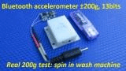
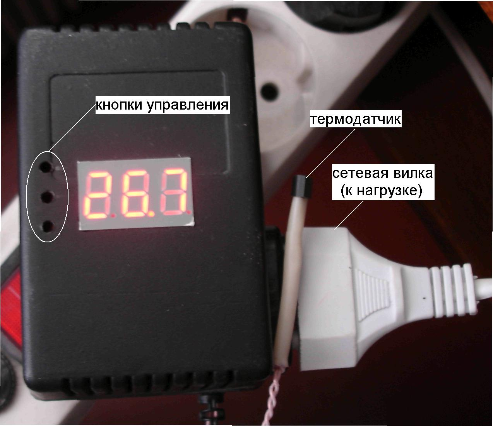
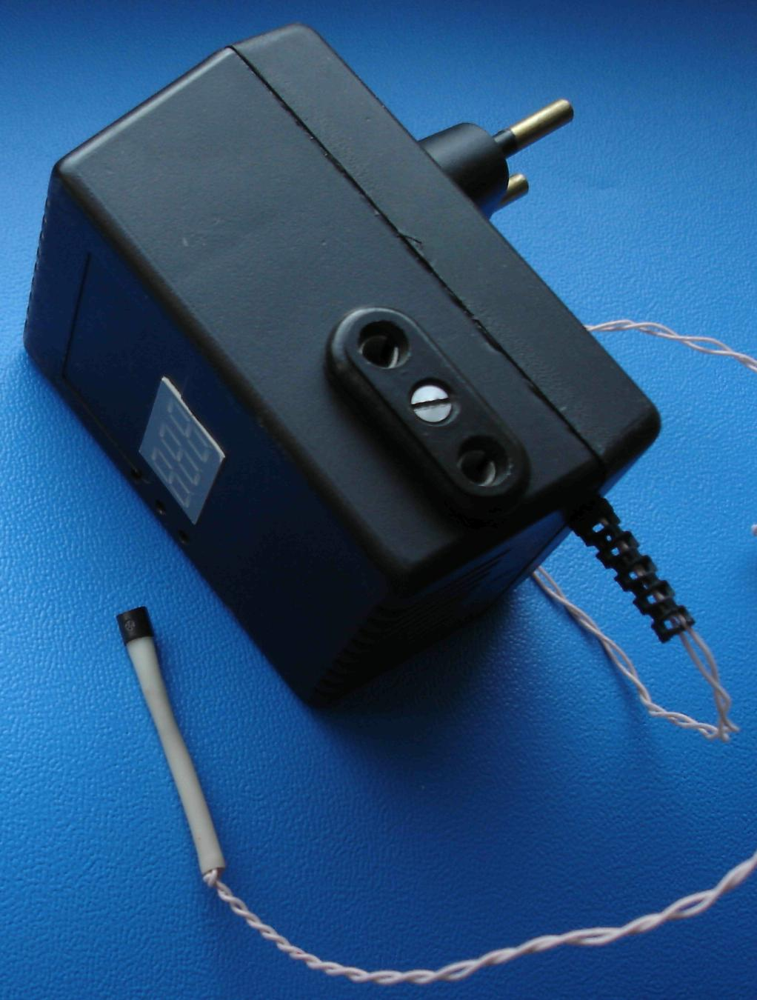
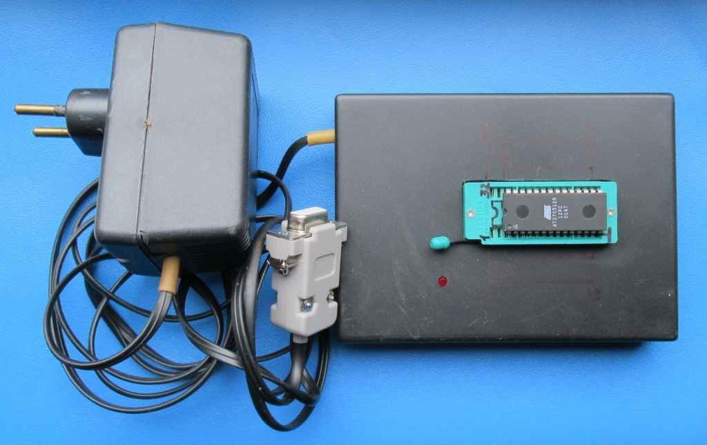
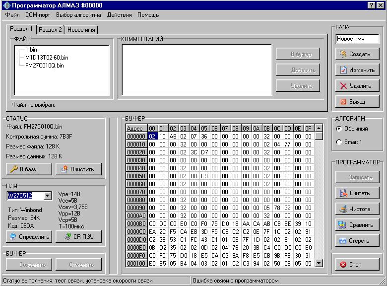

КАРТИНКИ кликабельны, открываются в полном масштабе на новой вкладке
Личные ПРОЕКТЫ.
Их можно
адаптировать для
разных задач - достаточно внести изменения в
компьютерное приложение, а для специфических требований и в программное
обеспечение микроконтроллера.
Адаптеры USB <>
I2C/SPI/1Wire/UART в корпусе USB-флешки;
одновременная поддержка устройств с разными
интерфейсами.
 Назначение:
Назначение:
экосистема:
платформа + ПО
для тестирования ваших проектов или
загрузки/использования чужих, как Ардуино,
только уже в
корпусе USB-флешки, вставляются без
кабеля в разъём USB компьютера -
подсоедините к такому адаптеру
ваше
устройство, защелкните корпус, и у вас есть готовый продукт.
А для
пользователей Ардуино есть Ардуино-совместимй
адаптер на ATmega8, ATmega168 или ATmega328.
Сам пользуюсь постоянно: очень помогает разобраться с новыми датчиками,
микросхемами, устройствами с интерфейсами I2C, SPI, 1Wire при
базовой прошивке адаптеров,
а также с UART, M-Bus, Step/Dir, CAN
и другими или принимать большие объёмы данных на высокой скорости - с
написанными под них отдельными программами.
Использую и как измеритель
интервалов, например, длительности импульса или периода,
и как формирователь
импульсов и последовательностей детерминированной длительности и
периода (пример).
Преимущества:
-адаптеры малогабаритны и помещаются в корпус USB-флешки;
снабжены разъёмом USB-A,
-есть драйверы и ПО для компьютера,
-для
каждого интерфейса отдельная группа контактов - устройства с разными интерфейсами могут
подключаться к адаптеру одновременно,
-адаптеры готовы к применению, в
микроконтроллеры загружены bootloader
и базовая программа;
-совместимость с Arduino
или свой загрузчик (bootloader) + компьютерное
приложение для загрузки.
Адаптер позволяет одновременно подключать
нескольких датчиков и
других устройств с
разными
интерфейсами к USB компьютера (датчики температуры,
влажности,
давления, акселерометры, модули GPS, микросхемы последовательной
памяти, часы реального времени и множество других устройств).
Драйверы USB или виртуального COM-порта, базовое ПО для
микроконтроллеров и для компьютера, а также специальное приложение, в
котором пользователь сам вводит формулу преобразования поступающих от
датчика данных в конечный результат
Разработчикам: предлагаются адаптеры на
разных микроконтроллерах STM8S003F3P6, ATmega8A,
ATmega328P, ATmega808
или других совместимых по цоколёвке
микроконтроллерах этих серий - в зависимости от того, с какими
микроконтроллерами предпочитает работать программист, какой объём
памяти требуется. Пайка - только провода к вашим устройствам/датчикам.
Адаптер и ПО уже проверены, вы можете убедиться в правильности запроса
и ответа подключаемых устройств без поиска дополнительного ПО.
Осваивающим Аrduino:
вам не нужно подбирать корпус, использовать кабель
USB, вы привычно прошиваете свою программу в Arduino IDE не в большую
плату с массой неиспользуемых в проекте контактов, а в законченное
устройство с протестированным ПО.
Собственные
программы могут загружаться в Адаптеры через bootloader по USB - не
требуется программатор (кроме адаптера на STM8S003F3P6 - этот МК
bootloader не поддерживает).
Примеры применения:-
представлена
небольшая часть проектов на базе универсальных адаптеров
USB<>I2C/SPI/1Wire/UART:

 программатор
UPDI для микроконтроллеров megaAVR 0-series с приложением под
Windows;
программатор
UPDI для микроконтроллеров megaAVR 0-series с приложением под
Windows;
 модуль
GPS;
модуль
GPS;
 акселерометры;
акселерометры;
 датчики
параметров окружающей среды (температуры, влажности, давления);
датчики
параметров окружающей среды (температуры, влажности, давления);
 инфракрасный
термометр - работа устройства в автономном режиме, питание от
аккумулятора, вывод температуры на 7-сегментный дисплей;
инфракрасный
термометр - работа устройства в автономном режиме, питание от
аккумулятора, вывод температуры на 7-сегментный дисплей;

использование разных интерфейсов в одном комплекте
подключены
память (SPI), термодатчик (1Wire), прецизионные датчики давления и
влажности, а также часы реального времени (I2C).
подключение 7-сегментных
дисплеев;
LED-лента с адресным управлением WS28xx (см.ниже).
- И еше многое другое позволяют быстро проверить эти адаптеры:
- например,
выбрать длительность импульса,
чтобы сердечник
соленоида достиг максимальной скорости с минимальным расходом
энергии.
- или убедиться, что человеческий глаз различит вспышку
светодиода длительностью 10мкс.
- А различит ли глаз вспышки по 10мкс пары
светодиодов с
интервалом в 30мс? А в 10 или 5мс?
- С
применением таких адаптеров разрешение множества вопросов о работе
устройств сводится к их подключению к адаптеру и, возможно, к загрузке
небольшого кода - готового или написанного самостоятельно.
 Быстрое
управление
(не Ардуино) адресными
светодиодными лентами WS28xx
Быстрое
управление
(не Ардуино) адресными
светодиодными лентами WS28xx
Ленты WS28xx
управляются компьютерным приложением через адаптер USB<>I2C/SPI/1Wire
по однопроводному интерфейсу
собственным приложением. Цвет свечения каждого
светодиода ленты выбирается отдельно.
Управляющие слова передаются компьютерным приложением или хранятся в
памяти микроконтроллера. Есть варианты программ для микроконтроллера на
Ассемблере для максимальной частоты обновления и на C (без ассемблерных
вставок) для облегчения вычислений, связанных с созданием цветовых
эффектов микроконтроллером.
Акселерометры
с интерфейсами USB, Bluetooth, RS-485. Прецизионные акселерометры. Высокочастотные акселерометры с аналоговыми
выходами
 Акселерометр Bluetooth работает
автономно, питание от аккумулятора, передаёт данные в реальном времени.
Акселерометр Bluetooth работает
автономно, питание от аккумулятора, передаёт данные в реальном времени.

Видео (нарезка) испытаний акселерометров BT
(видео с комментариями полностью - ссылки на
странице акселерометра
Bluetooth).
Тест магнитного крепления.
Стиральная машина: отжим,
длительное ускорение 225g.
Выстрел из катапульты.
Акселерометр BT в
корпусе "яйцо"
скатывается по лестнице - определение
мест сильных соударений по графику ускорения, таймеру и замедленному
видео (имитация поиска опасных мест на конвейере птицефабрики).
Акселерометр USB
работает при
подключении к USB компьютера стандартным кабелем USB длиной до 1,8м.
 Акселерометр USB с энергонезависимой
памятью
256КБайт, может работать
автономно при аккумуляторном питанияя;
Акселерометр USB с энергонезависимой
памятью
256КБайт, может работать
автономно при аккумуляторном питанияя;
при максимальной частоте выборки 3200Гц и 3-х каналах время записи 14с
(с новой ИС памяти до 28с)

Акселерометр RS-485 с адаптером
RS-485 <> USB, может работать с кабелем длиной до 100м.
 Прецизионный
акселерометр (USB или RS-485) с высоким разрешением, низким
уровнем шума, широким
диапазоном и встроенными фильтрами НЧ и ВЧ.
Прецизионный
акселерометр (USB или RS-485) с высоким разрешением, низким
уровнем шума, широким
диапазоном и встроенными фильтрами НЧ и ВЧ.
Высокочастотные
акселерометры
с аналоговыми выходами,
запись колебаний частотой до 30000Гц
.Усилители
обеспечивают работу на длинный кабель, сопротивление нагрузки 200 Ом.
Возможна совместная работа с представленным ниже Синхронным АЦП
12бит,4+4
канала или с 8-канальным
АЦП (см. раздел Различные АЦП.)
 Измеритель
для ударных испытаний
транспорта использовался для записи ускорений на испытаниях
железнодорожной цистерны.
Измеритель
для ударных испытаний
транспорта использовался для записи ускорений на испытаниях
железнодорожной цистерны.
Измеритель
для ударных испытаний оборудования
записывал ударные ускорения при испытаниях мотоциклетной защиты и
шлемов.
АЦП, 1 канал, частота выборки 1МГц,
 12 разрядов, память
240000выборок,
USB-интерфейс, питание от USB или автономное
12 разрядов, память
240000выборок,
USB-интерфейс, питание от USB или автономное
АЦП - контроллер 8-ми термопар,
 частота выборки
185кГц (1 канал), 34кГц (8 каналов), 12 разрядов,
память
240000выборок,
USB-интерфейс, питание от USB или автономное,
частота выборки
185кГц (1 канал), 34кГц (8 каналов), 12 разрядов,
память
240000выборок,
USB-интерфейс, питание от USB или автономное,
внешний
запуск измерения (на фото - по световому сигналу)
АЦП, 8
каналов,
 частота
выборки
185кГц (1 канал), 34кГц (8 каналов), 12 разрядов, память
240000выборок,
USB-интерфейс, питание от USB или автономное
частота
выборки
185кГц (1 канал), 34кГц (8 каналов), 12 разрядов, память
240000выборок,
USB-интерфейс, питание от USB или автономное
На фото: в корпусах находятся платы аналоговых
акселерометров, по два акселерометра ADXL001-70g на каждой -
используется 4 канала АЦП;
питание акселерометров - через плату от USB.
Синхронный
АЦП (одновременное
преобразование в каналах), 4+4 канала,
 частота
выборки
168кГц, 12 разрядов, память
240000выборок
USB-интерфейс, питание от USB или автономное
частота
выборки
168кГц, 12 разрядов, память
240000выборок
USB-интерфейс, питание от USB или автономное
4 канала
для
записи
НАПРЯЖЕНИЯ и 4 канала - для ТОКА или НАПРЯЖЕНИЯ,
переключаемые
сопротивления нагрузок в токовых каналах, переключаемые диапазоны
входных сигналов.
 на
плате предусмотрены
на
плате предусмотрены
- микроконтроллер, управляющий модемом, формирующий запросы к
источникам данных, преобразующий поступающие данные в сообщения,
отправляемые модемом,
- разъём USB для подключения к компьютеру,
- интегрированная антенна / внешняя антенна,
- возможность подключения аккумулятора, установлен ионистор,
- RS-232 / TTL интерфейс для подключения к источнику данных,
- GSM / GPRS передача данных.,
- питание от источника +5В или по USB от компьютера, или от
аккумулятора (подзарядка через
модуль GSM)
Применение:
один модем с группой теплосчетчиков устанавливается на
несколько домов микрорайона.
к каждому модему через преобразователь M-Bus <> RS-232
подключена группа теплосчетчиков с интерфейсом M-Bus.
вариант 1: кодированные SMS с информацией от каждого
теплосчетчика передаются в
центр по запросам,
SMS принимаются, декодируются и пополняют базу данных;
вариант 2: информация от
теплосчётчиков преобразуется в файлы
и передаётся на ftp-сервер;
полный доступ к данным на сервере имеет администратор (формирование
базы данных, счетов для владельцев счётчиков); данные от своих
счётчиков могут запросить владельцы счётчиков.
GSM дистанционное
управление+сигнализация на старом мобильном телефоне
 Мобильный
телефон
передаёт и принимает СМС,
Мобильный
телефон
передаёт и принимает СМС,
- принимаемые СМС декодируются подключенным к телефону
микроконтроллером для управления электрооборудованием;
- к микроконтроллеру подключены контакты, при замыкании которых
микроконтроллер формирует СМС и передаёт его через мобильный телефон на
определённый телефонный номер;
- при звонке на мобильный выполняется прослушивание помещения.
 Карманный люксметр
с графическим дисплеем ЛГ05,
память на 40 записей (графиков), передача записанных данных по USB, хранение и отображение на компьютере.
Карманный люксметр
с графическим дисплеем ЛГ05,
память на 40 записей (графиков), передача записанных данных по USB, хранение и отображение на компьютере.
Комбинированный
светофильтр с характеристиками как у глаз человека.
Возможность просмотра графика записанного
сигнала (400 точек) на дисплее люксметра, вычисление результата для
выделенного пользователем участка графика (минимум, максимум, среднее, коэффициент и частота пульсаций).
При
вызове из памяти люксметра записанных ранее массивов, на его дисплее воспроизводятся
результаты измерений и графики.
Компьютерное приложение
обеспечивает возможность считывания массивов из памяти
люксметра по USB, отображения считанных данных,
хранения и документирования.
На странице люксметров можно скачать приложение
с файлами данных, записанных для различных
источников (мониторы, лампы, телевизоры) люксметром
с USB-интерфейсом.
Интересны графики, полученные при проверке люксметром
TFT-мониторов:
при отображении статической
картинки часть TFT-мониторов дает, как и ожидалось,
постоянный световой поток, а часть -
ПУЛЬСИРУЮЩИЙ. На старых , дешевых
TFT-мониторах установлена подсветка с питанием переменным током невысокой частоты.
Соответствующие графики приведены на странице люксметров. Там же ссылки на видеоинструкции к люксметру.

Люксметр
графический ЛГ09
с интерфейсом
USB, 8 диапазоном, частота
выборки до 8,25кГц.
Комбинированный светофильтр с характеристиками как
у глаз человека, молочный светофильтр, насадка для измерения яркости.
Данные передаются в компьютер, отображаются в т.ч.
в виде графиков.
 Колориметр
определяет координаты цвета и цветности
несамосветящихся и самосветящихся объектов;
пополняемая пользователем библиотека эталонов,
образцов, локусов, молочных стекол.
Колориметр
определяет координаты цвета и цветности
несамосветящихся и самосветящихся объектов;
пополняемая пользователем библиотека эталонов,
образцов, локусов, молочных стекол.
Электретный
микрофон, наушник от mp3-плеера, плата 27х7мм - вешается прям на ухо
(как лапша). Представлены схема, конструкция.
Видео:
тест: ширины дорожек и зазоров 0,1мм и меньше, тест принтеров
(разрешение 600 и 1200 dpi). На
примере платы для гарнитуры в фотографиях представлена
последовательность изготовления ДВУСТОРОННЕЙ печатной платы. Особое
внимание уделено совмещению обоих слоев, качеству травления.
Терморегулятор

Устройство
сделано для
регулировки температуры на даче, используется
для предварительных температурных испытаний
электронной аппаратуры в условиях лаборатории в
самодельном термостате - ну, очень удобно: в
термостат бросается только датчик, все
регулировки снаружи, нагреватель (лампочка)
погас-включился - записывай температуру, снимай
показатели испытываемой аппаратуры.
Предыдущее
устройство было сделано на терморезисторе и
сдвоенном операционном усилителе, но изменять
желаемую температуру с помощью подстроечного
резистора, подбирать резистор для обеспечения
гистерезиса было довольно хлопотно.

Представленный
контроллер довольно прост, выполнен на МК Attiny26 и
светодиодном дисплее на 3 десятичные цифры, на
котором температура индицируется в формате XX.X
Тремя
кнопками можно установить температуры ВКЛЮЧЕНИЯ
и ВЫКЛЮЧЕНИЯ нагревателя (одной кнопкой
производится выбор режима: <индикация
температуры в помещении> – <установка
TºC
включения> – <установка TºC выключения>,
кнопкой <+> увеличивается, а кнопкой <->
уменьшается значение температуры в режимах
установки ТºC).
ИС DS18B20,
используемая в качестве термодатчика,
подсоединяется лишь двумя проводами в несколько
метров длиной к контроллеру. DS18B20 представляет
собой ИС с последовательным интерфейсом в
корпусе TO-92. Ошибка измерения температуры
составляет менее ±0.5ºC в диапазоне -10ºC…+85ºC и ±2ºC в
диапазоне -55ºC…+125ºC без дополнительной
калибровки.
Контроллер
коммутирует напряжение сети 220В на гальванически
развязанную нагрузку (нагреватель), обеспечивая
ток до 4А (на даче используется устройство
поджига газа, потребляющее мене 40Вт).
Интерес
скорее представляет конструкция устройства: все
компоненты (печатная плата контроллера с
индикатором, опторазвязкой, симистором,
стабилизатором и трансформатором питания), за
исключением вынесенной на проводах ИС
термодатчика, размещены в корпусе сетевого блока
питания с сетевой вилкой, сбоку корпуса
находится розетка для подключения нагрузки.
Индикатор и отверстия для доступа к кнопкам
находятся на задней стенке корпуса. Все, что
требуется - прорезать окно для индикатора, 3
отверстия для доступа к кнопкам и 3 паза внутри
корпуса разогретым паяльником.
Измеритель
2-х температур
Устройство
сделано для дизельного автомобиля (Volkswagen), как
сказал заказчик, при запуске нужно знать
температуру снаружи, а температура в салоне -
чтобы была. Используется 2 термодатчика и два
индикатора температуры по 3 десятичных разряда,
плюс 2 светодиода для индикации знака "-".
Плата
индикаторов 46 х 31мм, плата с микроконтроллером 42
х 36мм (требования заказчика под место в приборной
панели), питание от автомобильного аккумулятора
12В-15В (возможно питание от +5В).
Если один
из термодатчиков "замочить", можно измерять
относительную влажность (потребуется добавить
программу c алгоритмом пересчета показаний сухого
и мокрого термодатчиков в относительную
влажность).
"Алмаз", ПРОГРАММАТОР микросхем памяти, в
т.ч.
использующихся в
бортовых компьютерах автомобилей.

Программатор
разработан для станций обслуживания
автомобилей. Он имеет простой и понятный для
пользователей интерфейс и позволяет считывать и
записывать программы в ПЗУ, использующиеся в
качестве памяти программ в бортовых компьютерах
автомобилей, а также организовать базу данных
файлов с индивидуальными настройками для
конкретных автомобилей. Список программируемых
ЗУ: AM27C010 AM27C256 AM27C512 AM28F010 AM29F010 AT27C256 AT27C512
M27256 M27512 M27C256
M27C512 SST29EE010 SST29EE512 W27C257 W27C512 W29EE011 W29EE512.
Здесь можно скачать
демонстрационную версию ПО ПРОГРАММАТОРА
для РС.
Проект
2003 г., у меня были большие сомнения в его целесообразности - на
радиорынке было много программаторов ЗУ.

Но, очевидно,
заказчик точно знал, зачем
это ему нужно: недавно
попалась ветка в
форуме - до сих пор хорошие отзывы.
Вероятно, дело и в требованиях
заказчика к ПО, и в целевой аудитории, и
в поддержке множества значений напряжений, указанных в даташитах на все
программируемые микросхемы - от 3,75В до 14В.
Например, на фото
выбрана микросхема, для работы с которой требуется четыре значения
напряжения: 5В, 12В (программирование), 14В
(стирание) и 3,75В (проверка стирания).
BinSoft:
программа для тьюнинга ЭСУД (электронных систем
управления двигателем)
ПРОГРАММА BinSoft обеспечивает
тьюнинг
инжекторных двигателей коррекцией программного
обеспечения бортовых компьютеров
автомобилей. Программа позволяет изменять
параметры Электронных систем управления
двигателем (ЭСУД), хранящиеся в
программном обеспечении (ПО) бортового
компьютера автомобиля (в ПЗУ).
ПО может быть считано из ПЗУ описанным вышее программатором,
сохранено в виде файла, файл корректируется
программой BinSoft, после сохранения снова
записывается в ПЗУ с помощью программатора.
Тип исходного программного обеспечения
определяется автоматически, в том числе и для уже
корректировавшегося программного обеспечения.
Корректируется ПО для разных модификаций Электронных
систем управления двигателем (ЭСУД)
Bosch, Январь, VS5
Контроллер
балансировки вращающихся объектов
Контроллер
балансировки вращающихся объектов, таких, как
роторы двигателей. Для балансировки
используется стенд с мягкой подвеской и
акселерометр, а также круг стробоскопа с
угловыми метками для определения направления
дисбаланса. Круг вращается вместе с ротором.
Балансируемый объект раскручивается до 2000...3000
оборотов в минуту, сигнал, образующийся на выходе
акселерометра, пропорционален величине
виброускорения. Этот сигнал, возникающий из-за
несбалансированности вращающегося объекта,
усиливается и подается на контроллер. Контроллер
определяет частоту сигнала (частоту вращения
ротора), а амплитуда сигнала, пропорциональная
преобразуемому акселерометром виброускорению,
пересчитывается в вибросмещение,
пропорциональное несбалансированной массе
объекта. Направление дисбаланса на круге с
угловыми метками указывает импульсная
светодиодная подсветка, управляемая
контроллером. На индикаторе отображается
амплитуда вибросмещения, при нажатии кнопки
"Частота" отображается частота вращения.
Балансировочная масса, пропорциональная
вибросмещению, добавляется в направлении,
противоположном направлению дисбаланса. Хотя
направление дисбаланса массы соответствует
максимальному значению сигнала, (это направление
смещено на 90 градусов относительно нуля
(перехода сигнала, пропорционального
виброускорению, через ноль), в контроллере
предусмотрена возможность изменения углового
смещения подсветки круга стробоскопа от 0 до 359-ти
градусов с шагом в 1 градус относительно нуля
градусов (переход сигнала через ноль). Угол
смещения подбирается кнопками и запоминается в
контроллере для конкретного стенда. Таким
образом, на круге можно задать вместо подсветки
направления дисбаланса подсветку направления, в
котором следует добавлять балансировочный
грузик. Возможно перепрограммирование
контроллера на индикацию угла дисбаланса без
стробоскопа. В этом случае понадобится датчик
или метка (оптическая, магнитная, ...) вместо круга
стробоскопа.
8-канальный контроллер
весоизмерителя.
Конечно, устройство может быть использовано не
только совместно с тензодатчиками,
предназначенными для измерения веса, но и с
другими датчиками. Сигналы от датчиков могут
быть как униполярными, так и биполярными,
максимальные входные напряжения АЦП,
соответствующие полной шкале, могут выбираться
из ряда 20мВ, 40мВ, 80мВ, 160мВ, 320мВ, 640мВ, 1,28В, 2,56В. В АЦП
используется цифровая фильтрация, снижающая
помехи частотой 50Гц.
Отличительные особенности разработанного
устройства
в использовании для каждого подключаемого тензодатчика отдельного
дельта-сигма АЦП,
количество подключаемых датчиков выбирается пользователем (от 1-го
до 8-ми),
передача данных от каждого АЦП в блок индикации- по RS485 на
расстояние порядка 100м,
возможность линеаризации характеристик тензодатчиков по нескольким
точкам (здесь по 4-м), для этого к блоку индикации на время калибровки
подключается клавиатура (13 клавиш: 10 цифр, десятичная точка, ВВОД,
ОТМЕНА), на калибруемый датчик устанавливается образцовый груз 1, с
клавиатуры вводится его вес, то же повторяется для грузов 2, 3, 4, по
установленным весам и введенным значениям автоматически определяются
коэффициенты, используемые для отображения веса в штатном режиме,
одновременно к индикатору могут подключаться датчики разных типов
с разными параметрами, индикатор отображает сумму сигналов от каждого
из датчиков, каждый из которых домножается на свой индивидуальный
коэффициент.
 Проводная
гарнтура
для стационарного телефона
Проводная
гарнтура
для стационарного телефона Изготовление
двусторонней печатной платы в домашних условиях
Изготовление
двусторонней печатной платы в домашних условиях{kind=link}
{kind=link}